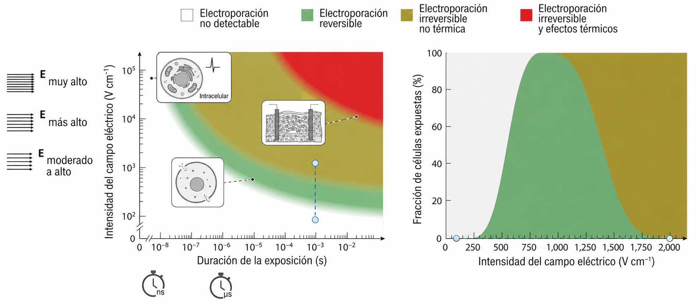

Regímenes de operación
Campo eléctrico, duración de pulso, dosis y respuesta biológica
1 Propósito del módulo
La electroporación no tiene un único resultado biológico. El desenlace depende del régimen físico de operación: intensidad de campo, duración del pulso, número de pulsos, forma de onda, conductividad del medio, temperatura y tipo celular.
Este módulo organiza los principales regímenes de operación y muestra cómo un mismo principio físico puede conducir a respuestas biológicas distintas.
2 Parámetros principales
Los parámetros experimentales más importantes son:
| Parámetro | Significado | Efecto general |
|---|---|---|
| \(E_0\) | campo eléctrico externo | controla la magnitud del voltaje inducido |
| \(\tau\) | duración del pulso | controla la escala temporal de carga y exposición |
| \(N\) | número de pulsos | contribuye a la dosis total |
| \(f\) o \(\Delta t\) | frecuencia o intervalo entre pulsos | afecta recuperación, acumulación y calentamiento |
| \(\sigma\) | conductividad del medio | afecta corriente y calentamiento Joule |
3 Mapa conceptual de regímenes
En términos generales, se pueden distinguir cuatro escenarios:
| Régimen | Condición cualitativa | Resultado esperado |
|---|---|---|
| No detectable | estímulo insuficiente | no se observa aumento significativo de permeabilidad |
| Reversible | permeabilización transitoria | transporte molecular con recuperación celular |
| Irreversible no térmica | daño de membrana dominante | pérdida de viabilidad sin calor dominante |
| Térmico | disipación Joule significativa | daño inespecífico por aumento de temperatura |
La Figura 1 muestra de manera cualitativa cómo la combinación entre intensidad del campo eléctrico y duración del pulso permite ubicar distintos regímenes de operación. Este tipo de mapa debe interpretarse como una guía física aproximada, no como una frontera universal exacta.

4 Electroporación reversible
La electroporación reversible ocurre cuando el estímulo eléctrico induce vías transitorias de transporte, pero la célula conserva la capacidad de recuperar la integridad de la membrana.
Este régimen es útil cuando se busca introducir moléculas manteniendo viabilidad celular, por ejemplo:
- ADN;
- ARN;
- proteínas;
- fármacos;
- sondas fluorescentes;
- moléculas pequeñas.
La clave física es alcanzar una permeabilización suficiente sin superar la capacidad de recuperación celular.
5 Electroporación irreversible no térmica
La electroporación irreversible ocurre cuando el daño de membrana supera la capacidad de recierre, reparación y recuperación homeostática.
En este caso, la pérdida de viabilidad se atribuye principalmente a la alteración irreversible de la membrana y no necesariamente al aumento de temperatura.
Este régimen es importante en ablación no térmica de tejidos, especialmente cuando se busca destruir células preservando en parte la matriz extracelular y estructuras mecánicas del tejido.
6 Régimen térmico
A campos suficientemente altos, pulsos prolongados o dosis acumuladas, la corriente eléctrica puede producir calentamiento Joule significativo.
El daño térmico no es específico de la membrana. Puede afectar:
- proteínas;
- lípidos;
- organelos;
- matriz extracelular;
- volumen del medio tratado.
Por esta razón, cuando se desea estudiar electroporación no térmica, es necesario estimar o controlar el aumento de temperatura.
7 Pulsos de nanosegundos
Los pulsos eléctricos de nanosegundos, usualmente denominados nsPEF, usan duraciones muy cortas y campos eléctricos altos.
En estos regímenes, la escala temporal del estímulo puede ser comparable o menor que algunos tiempos característicos de carga de membranas celulares y subcelulares. Por ello, se investigan efectos sobre:
- membrana plasmática;
- organelos;
- señalización intracelular;
- calcio;
- apoptosis;
- respuestas subcelulares.
Estos efectos dependen fuertemente de la forma de onda, amplitud, número de pulsos y geometría celular.
8 Formas de onda
La forma temporal del pulso también modifica la respuesta biológica.
| Forma de onda | Característica | Comentario físico |
|---|---|---|
| Decaimiento exponencial | descarga RC clásica | menor control temporal de la dosis |
| Cuadrada monopolar | amplitud casi constante | buen control de duración y amplitud |
| Bipolar simétrica | inversión de polaridad | puede reducir polarización interfacial |
| Bimonopolar | dos monopulsos consecutivos | aumenta dosis entregada |
| Bipolar con intervalo | pulsos separados por pausa | permite explorar mitigación o acumulación de efectos |
La Figura 2 resume varias formas temporales de pulso usadas en electroporación. Aunque todas pueden inducir permeabilización, no entregan la misma dosis temporal ni producen la misma polarización interfacial; por ello, la forma de onda es parte del diseño físico del estímulo.

9 Lectura integradora
El régimen de electroporación no se define por una sola variable. Una misma amplitud de campo puede tener efectos distintos si cambia:
- la duración del pulso;
- el número de pulsos;
- la conductividad del medio;
- la temperatura;
- la geometría celular;
- la composición de membrana;
- la forma de onda.
Por ello, los mapas de régimen deben leerse como guías operacionales aproximadas, no como fronteras universales exactas.
10 Conexión con aplicaciones
Los regímenes físicos permiten entender por qué la electroporación puede utilizarse en contextos tan diferentes como transferencia génica, electroquimioterapia, ablación tumoral, procesamiento de alimentos y modulación intracelular.